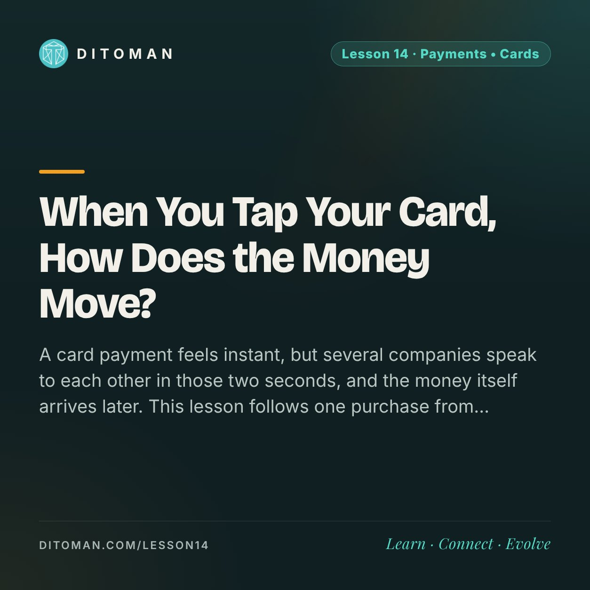

Когда вы прикладываете карту, как движутся деньги?
وقتی کارت میکشیم، پول چطور جابهجا میشود؟
Оплата картой кажется мгновенной, но за эти две секунды несколько компаний обмениваются сообщениями, а сами деньги приходят позже. Этот урок прослеживает покупку от терминала до счёта магазина.
خرید با کارت آنی به نظر میرسد، ولی در همان دو ثانیه چند شرکت با هم حرف میزنند و خودِ پول دیرتر میرسد. این درس یک خرید را از کارتخوان تا حساب فروشنده دنبال میکند.
Содержание урока
محتوای درس
Читайте урок на английском или персидском.
درس را به فارسی یا انگلیسی بخوانید.
Вы подносите карту к терминалу, слышите писк, берёте чек и уходите. Две секунды. Кажется, что деньги перепрыгнули с вашего счёта в магазин.
Нет, по крайней мере пока. За эти две секунды путешествовали вопрос и ответ. Деньги приходят позже. Если увидеть эту разницу, становятся понятны комиссии, возвраты, неудачные платежи и то, почему криптоплатежи позже в этой серии работают так иначе.
01. Пять участников
В каждом карточном платеже, в любой стране, один и тот же состав.
Держатель карты: вы.
Продавец: магазин.
Банк-эмитент: банк, который выпустил вашу карту и ведёт ваш счёт.
Эквайер: банк магазина или платёжная компания, которая предоставляет терминал и собирает деньги для магазина.
Сеть: система посередине, которая соединяет все банки и устанавливает правила.
В большинстве стран мира сеть — это Visa или Mastercard. В Иране Shaparak подключает терминалы и онлайн-шлюзы к банкам, а Shetab соединяет банки друг с другом.
02. Шаг первый: вопрос (авторизация)
Когда вы подносите карту, терминал отправляет сообщение вашему банку через эквайера и сеть: эта карта, эта сумма, этот магазин. Можно?
Ваш банк проверяет, действительна ли карта, верны ли PIN или касание, хватает ли средств и нет ли признаков мошенничества. Затем отвечает «да» или «нет». Если «да», он блокирует сумму. Всё это и есть тот писк.
- 1Вы подносите карту. Терминал считывает карту и сумму.
- 2Эквайер пересылает запрос в сеть.
- 3Сеть направляет его в банк, выпустивший вашу карту.
- 4Ваш банк проверяет баланс, PIN и признаки мошенничества, затем отвечает «да» или «нет».
- 5Ответ возвращается на терминал: писк.
- 6Позже банки проводят расчёт и счёт магазина получает зачисление.
03. Шаг второй: деньги (клиринг и расчёт)
В конце дня одобренные платежи собираются и суммируются. Это называется клиринг: вычисление того, кто кому сколько должен.
Затем идёт расчёт: банки действительно платят друг другу, часто через счета в центральном банке, и счёт магазина получает зачисление. Это нередко происходит на следующий рабочий день, иногда позже.
Так что чек магазина — это обещание, что деньги придут. Для покупателя это ощущается как мгновенно. Для магазина — нет.
04. Кто за всё это платит?
Терминалы, сети и системы борьбы с мошенничеством стоят денег. В большинстве стран продавец платит небольшой процент с каждой продажи, и часть этой комиссии, называемая межбанковской (interchange), достаётся банку-эмитенту.
Уровень сильно различается. Европейский союз ограничивает interchange 0,2% для дебетовых карт и 0,3% для кредитных. На других рынках общая комиссия может составлять два-три процента. В Иране схема была необычной: годами расходы несли банки, а магазины ничего не платили за покупки по карте.
Когда магазин даёт скидку за наличные или добавляет надбавку за карту, причина обычно в этой комиссии.
05. Почему платежи иногда не проходят или возвращаются
Отказ: банк-эмитент ответил «нет» из-за баланса, лимитов или проверки на мошенничество.
Деньги заблокированы, а покупка не прошла: блокировка была поставлена, но ответ так и не дошёл до терминала. Позже блокировка снимается, поэтому деньги через какое-то время «возвращаются».
Возвраты и споры: поскольку посередине стоят банки, карточный платёж можно отменить. Это защищает покупателей. Это же — издержки и риск для магазинов.
06. Как это соотносится с криптовалютой
Карточный платёж — это цепочка доверенных компаний, передающих сообщения, а расчёт происходит позже. В блокчейн-платеже нет эмитента, эквайера и сетевой компании. Сам перевод и есть расчёт, и после подтверждения банк не может его отменить.
Это делает его быстрым и открытым для всех, но и убирает страховочную сетку. Урок 16 так же шаг за шагом прослеживает криптотранзакцию.
Что из этого вынести
Писк — это ответ на вопрос. Деньги двигаются позже.
Участвуют пять сторон: держатель карты, продавец, банк-эмитент, эквайер и сеть.
Авторизация мгновенна. Клиринг и расчёт занимают часы или дни.
Кто-то всегда платит за систему, обычно продавец, и правила различаются по странам.
Карточные платежи можно отменить. Блокчейн-платежи нельзя. У каждого есть цена.
کارت را به کارتخوان نزدیک میکنیم، یک بوق میشنویم، رسید را میگیریم و میرویم. دو ثانیه. به نظر میرسد پول از حساب ما به حساب مغازه پریده است.
ولی هنوز این اتفاق نیفتاده. چیزی که در آن دو ثانیه جابهجا شد یک پرسش و یک پاسخ بود. خودِ پول بعداً میآید. دیدن این تفاوت، کارمزد، برگشت پول و تراکنش ناموفق را توضیح میدهد، و در ادامهی همین مجموعه نشان میدهد چرا پرداخت کریپتویی اینقدر متفاوت کار میکند.
۰۱. پنج بازیگر
هر پرداخت کارتی، در هر کشوری، همین بازیگران را دارد.
دارندهی کارت: خود ما.
فروشنده (پذیرنده): مغازه یا فروشگاه.
بانک صادرکننده: بانک ما که کارت را داده و حسابمان پیش اوست.
بانک پذیرنده: بانک یا شرکت پرداختِ مغازه که کارتخوان را میدهد و پول را برای فروشنده جمع میکند.
شبکه: سامانهای در میانه که همهی بانکها را به هم وصل میکند و قواعد را تعیین میکند.
در بیشتر دنیا این شبکه ویزا یا مسترکارت است. در ایران، شاپرک کارتخوانها و درگاههای اینترنتی را به بانکها وصل میکند و شتاب بانکها را به یکدیگر.
۰۲. قدم اول: پرسش (تأیید تراکنش)
وقتی کارت میکشیم، کارتخوان پیامی را از راه شرکت پرداخت و شبکه به بانک ما میفرستد: این کارت، این مبلغ، این فروشگاه. تأیید میکنی؟
بانک ما بررسی میکند که کارت معتبر باشد، رمز درست باشد، موجودی کافی باشد و نشانهای از تقلب نباشد. بعد جواب میدهد: بله یا نه. اگر جواب بله باشد، آن مبلغ را در حساب مسدود میکند. همهی اینها همان یک بوق است.
- ۱کارت میکشیم. کارتخوان کارت و مبلغ را میخواند.
- ۲شرکت پرداختِ فروشنده درخواست را به شبکه میدهد.
- ۳شبکه آن را به بانک صادرکنندهی کارت میرساند.
- ۴بانک ما موجودی، رمز و نشانههای تقلب را بررسی میکند و جواب بله یا نه میدهد.
- ۵پاسخ به کارتخوان برمیگردد: همان بوق.
- ۶بعداً بانکها تسویه میکنند و پول به حساب فروشنده مینشیند.
۰۳. قدم دوم: پول (پایاپای و تسویه)
آخر روز، پرداختهای تأییدشده جمع و حساب میشوند. به این کار پایاپای میگویند: معلوم میشود چه کسی به چه کسی چقدر بدهکار است.
بعد نوبت تسویه است: بانکها واقعاً به هم پول میدهند، معمولاً از راه حسابهایشان نزد بانک مرکزی، و پول به حساب فروشنده مینشیند. این کار اغلب روز کاری بعد انجام میشود و گاهی دیرتر.
پس رسید فروشنده قولی است که پول در راه است. برای خریدار آنی به نظر میرسد. برای فروشنده اینطور نیست.
۰۴. هزینهی این همه را چه کسی میدهد؟
کارتخوان، شبکه و سامانههای ضدتقلب هزینه دارند. در بیشتر کشورها فروشنده درصد کمی از هر فروش را میپردازد و بخشی از آن کارمزد، به بانکی میرسد که کارت را صادر کرده است.
اندازهی این کارمزد خیلی فرق میکند. اتحادیهی اروپا سقف آن را برای کارت نقدی ۰٫۲ درصد و برای کارت اعتباری ۰٫۳ درصد گذاشته است. در بازارهای دیگر کل کارمزد میتواند دو یا سه درصد باشد. در ایران وضع متفاوت بوده: سالها این هزینه را بانکها میپرداختند و فروشنده برای خرید کارتی چیزی نمیداد.
وقتی فروشگاهی برای پرداخت نقدی تخفیف میدهد یا برای کارت مبلغی اضافه میگیرد، دلیلش معمولاً همین کارمزد است.
۰۵. چرا پرداخت گاهی ناموفق میشود یا پول برمیگردد
رد شدن: بانک صادرکننده جواب «نه» داده؛ بهخاطر موجودی، سقف تراکنش یا بررسی تقلب.
پول کم شد ولی خرید انجام نشد: مبلغ مسدود شده ولی پاسخ به کارتخوان نرسیده است. این مبلغ بعداً آزاد میشود و برای همین پول «بعد از مدتی برمیگردد».
برگشت پول و اعتراض: چون بانکها در میانهاند، پرداخت کارتی را میشود برگرداند. این از خریدار محافظت میکند و برای فروشنده هزینه و ریسک دارد.
۰۶. مقایسه با کریپتو
پرداخت کارتی زنجیرهای از شرکتهای مورد اعتماد است که به هم پیام میدهند و تسویه بعداً انجام میشود. در پرداخت روی بلاکچین، بانک صادرکننده، شرکت پرداخت و شرکت شبکهای وجود ندارد. خودِ انتقال همان تسویه است و بعد از تأیید، هیچ بانکی نمیتواند آن را برگرداند.
این آن را سریع و برای همه در دسترس میکند و همزمان تور ایمنی را هم برمیدارد. درس ۱۶ یک تراکنش کریپتویی را به همین شکل قدمبهقدم دنبال میکند.
چه برداشتی کنیم
آن بوق، پاسخ به یک پرسش است. پول بعداً جابهجا میشود.
پنج بازیگر در کارند: دارندهی کارت، فروشنده، بانک صادرکننده، بانک پذیرنده و شبکه.
تأیید آنی است. پایاپای و تسویه چند ساعت یا چند روز طول میکشد.
همیشه کسی هزینهی این سامانه را میدهد، معمولاً فروشنده، و قواعدش در هر کشور فرق دارد.
پرداخت کارتی را میشود برگرداند. پرداخت روی بلاکچین را نمیشود. هر کدام هزینهای دارد.
Тот же вопрос, за границей
همین پرسش، آن طرف مرز
Внутри страны сеть соединяет каждый банк. Между странами единой сети нет, и именно здесь начинаются издержки и задержки. Урок 15 прослеживает платёж за границу.
داخل یک کشور، شبکه همهی بانکها را به هم وصل میکند. میان کشورها شبکهی واحدی نیست و هزینه و تأخیر از همانجا شروع میشود. درس ۱۵ یک پرداخت به خارج را دنبال میکند.
Ключевые понятия
مفاهیم کلیدی
- Держатель карты и продавец
- Банк-эмитент
- Эквайер
- Карточная сеть
- Авторизация
- Клиринг
- Расчёт
- Межбанковская комиссия
- Чарджбэк
- دارندهی کارت و فروشنده
- بانک صادرکننده
- بانک پذیرنده
- شبکهی کارت
- تأیید تراکنش
- پایاپای
- تسویه
- کارمزد
- برگشت پرداخت
Цели обучения
اهداف یادگیری
- Назовите пять участников карточного платежа и роль каждого.
- Объясните разницу между авторизацией и расчётом.
- Скажите, почему магазин получает деньги позже, чем думает покупатель.
- Объясните, кто обычно платит комиссии за карты и почему они различаются по странам.
- Сравните обратимый карточный платёж с окончательным блокчейн-платежом.
- پنج بازیگر یک پرداخت کارتی و کار هر کدام را نام ببرید.
- تفاوت تأیید تراکنش و تسویه را توضیح دهید.
- بگویید چرا پول دیرتر از آنچه خریدار فکر میکند به فروشنده میرسد.
- توضیح دهید کارمزد کارت را معمولاً چه کسی میدهد و چرا در هر کشور فرق دارد.
- پرداخت کارتیِ برگشتپذیر را با پرداخت قطعی روی بلاکچین مقایسه کنید.
Тест
آزمونک
Проверьте, что у вас осталось в памяти. Ответ — под каждым вопросом.
ببین چه چیزی در ذهنت مانده. پاسخ زیر هر پرسش آمده است.
Вопрос 1
پرسش ۱
Что на самом деле происходит за две секунды до писка?
در دو ثانیهی پیش از بوق، واقعاً چه اتفاقی میافتد؟
A. Деньги переходят на счёт магазина
الف. پول به حساب فروشنده میرود
B. Ваш банк отвечает на запрос и блокирует сумму
ب. بانک ما به یک درخواست جواب میدهد و مبلغ را مسدود میکند
C. Центральный банк печатает чек
ج. بانک مرکزی رسید صادر میکند
Правильный ответ: B
پاسخ درست: ب
Вопрос 2
پرسش ۲
Какой банк выпустил вашу карту и ведёт ваш счёт?
کدام بانک کارت شما را داده و حسابتان پیش اوست؟
A. Банк-эмитент
الف. بانک صادرکننده
B. Эквайер
ب. بانک پذیرنده
C. Сеть
ج. شبکه
Правильный ответ: A
پاسخ درست: الف
Вопрос 3
پرسش ۳
Что такое расчёт?
تسویه چیست؟
A. Проверка PIN
الف. بررسی رمز کارت
B. Печать чека
ب. چاپ رسید
C. Фактические платежи банков друг другу
ج. پرداخت واقعی بانکها به یکدیگر
Правильный ответ: C
پاسخ درست: ج
Вопрос 4
پرسش ۴
Сумма списана с вашего баланса, но покупка не прошла. Что, скорее всего, произошло?
مبلغ از موجودی کم شد ولی خرید انجام نشد. به احتمال زیاد چه شده؟
A. Магазин забрал деньги
الف. فروشنده پول را برداشته
B. Поставлена блокировка, которая будет снята
ب. مبلغ مسدود شده و بعداً آزاد میشود
C. Карта аннулирована
ج. کارت باطل شده
Правильный ответ: B
پاسخ درست: ب
Вопрос 5
پرسش ۵
Чем подтверждённый блокчейн-платёж отличается от карточного?
پرداخت تأییدشده روی بلاکچین چه فرقی با پرداخت کارتی دارد؟
A. Банк может его отменить
الف. بانک میتواند آن را برگرداند
B. Он окончательный, и ни один банк не может его отменить
ب. قطعی است و هیچ بانکی نمیتواند آن را برگرداند
C. Он всегда стоит три процента
ج. همیشه سه درصد کارمزد دارد
Правильный ответ: B
پاسخ درست: ب
Источники
منابع
- Регламент ЕС 2015/751 о межбанковских комиссиях по карточным платежам
- BIS CPMI: глоссарий терминов платёжной и рыночной инфраструктуры
- Shaparak: иранская сеть электронных карточных платежей
- Mehr News: комиссии за карточные платежи в Иране и кто их платит
Уровни комиссий и правила меняются. Цифры здесь описывают общую структуру, а не предложение какого-либо магазина или банка.
اندازهی کارمزدها و قواعد تغییر میکند. عددهای این درس ساختار کلی را نشان میدهند، نه نرخ یک فروشگاه یا بانک مشخص را.
با هم دنبال میکنیمСледите за новостями
Новые уроки сначала объявляются в каналах Ditoman.
درسهای تازه اول در کانالهای دیتومان معرفی میشوند.